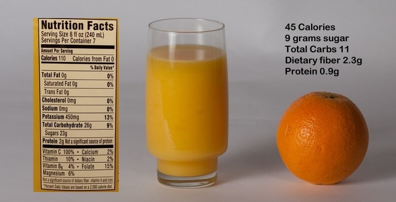

“Eating the pulp or whole fruit is far better than drinking the juice as the fibre is good for you”
Eating whole fruits helps ward off diabetes, while drinking juice raise the risk of developing the disease. Juices are frequently included as part of the classification of fruit, they are clearly different in form and lack much of the fibre of the whole fruit.
But several studies point to pomegranate juice as a source of protective antioxidant compounds. With citrus juices, the vitamin C content has long been considered to protect against oxidative stress and atherosclerotic processes. Other polyphenolic compounds in citrus juices are also being investigated for their potential roles in the prevention of lipid peroxidation and atherosclerosis. Many juices are rich in potassium which reduce blood pressure and may relate a lower risk of stroke. During juicing processes, some phytochemicals and dietary fiber are lost, it extract the juice and leave behind the pulp and skin. Fluids are more rapidly absorbed than solids, drinking juice brings on a “more rapid and more dramatic glucose and insulin response” than eating whole fruits. Peoples are not aware of how much sugar is added to the juices that they typically drink.
Despite the plentiful nutrients available in juice, it lack the fiber contained in whole fruit. Rather than simply counting carbs, people should pay attention to the quality of the carbohydrates in their diet. Whole grains are a healthier choice than refined carbohydrates such as white bread, and whole fruits are a healthier choice than processed juices.

Fiber's health benefits include support’s digestion, controls blood sugar, keeps glycemic index low and reduces cholesterol. Fiber also helps to feel full longer, an important advantage of whole fruits. Due to whole fruits fiber content, body absorbs the natural sugars more slowly; therefore, it reduces spike in the blood sugar level. Fruit juice, though tasty and refreshing, is not as healthy as whole fruit. When a whole fruit is pressed or squeezed to make juice, some of the nutrients, most notably fiber and the water-soluble vitamins, are lost in the process. While 100% fruit juice is not completely devoid of nutrients, it is undoubtedly less nutrient dense than the whole fruit. Many fruit juices that are sold in supermarkets contain only a small percentage of real fruit juice, and contain added sweeteners (sucrose or high fructose corn syrup). As a result, it is easy to consume a large amount of calories without getting any actual nutrition.
Eating more whole fruits, particularly blueberries, grapes, and apples, was significantly associated with a lower risk of type 2 diabetes. Greater consumption of fruit juices was associated with a higher risk of type 2 diabetes. People who ate at least two servings each week of certain whole fruits — particularly blueberries, grapes, and apples — reduced their risk for type 2 diabetes by as much as 23 percent in comparison to those who ate less than one serving per month. Conversely, those who consumed one or more servings of fruit juice each day increased their risk of developing type 2 diabetes by as much as 21 percent. Whole apples, oranges, and grapefruits have 23 to 54 percent more antioxidants than juices. Whole fruit provides beneficial antioxidants and fiber with approximately 35 percent less sugar than fruit juice.
“Juice is a far less healthy option than a real piece of fruit”